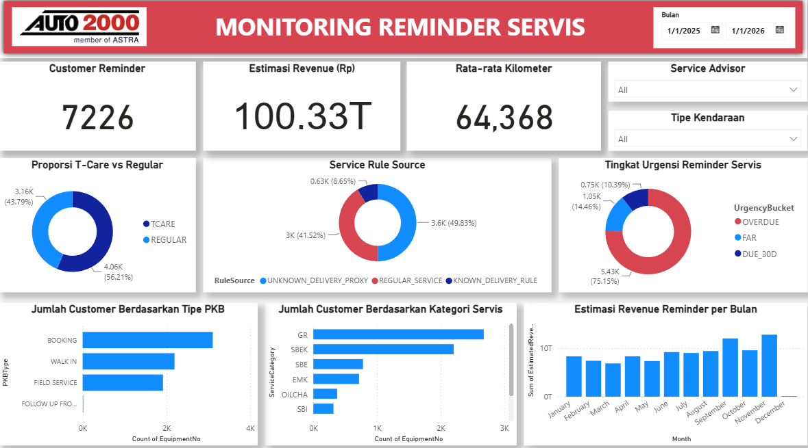

BUSINESS ANALYTICS · AUTOMATION
Service Reminder Analytics
Operational aftersales analytics pipeline developed during my Business Data Analyst internship at Auto2000 Kenjeran, combining service business rules, customer prioritization, XGBoost risk scoring, automated targeting, Google Sheets, and Power BI monitoring.
Business Impact
Supports customer prioritization and
retention-oriented service reminder operations.
View Repository →